 Charles Gilisquetlaan 34 1030, Brussel
 02-241.31.08
02-241.31.08
 info@kahiel.be
info@kahiel.be

| Vakken | Godsdienst /zedenleer |
Nederlands | Frans | Engels | Wiskunde | Geschiedenis | Aarderijkskunde | Burgerschap | Natuur- wetenschappen |
Plastische opvoeding |
Techniek | Muzikale opvoeding | Lichaamlijke opvoeding |
|---|---|---|---|---|---|---|---|---|---|---|---|---|---|
| Latijn | 2 | 5 | 4 | 2 | 5 | 1 | 1 | 1 | 1 | 1 | 1 | 1 | 1 |
| Moderne wetenschappen |
2 | 5 | 4 | 2 | 5 | 1 | 1 | 1 | 1 | 1 | 1 | 1 | 1 |
| latijn | Klastitularis |
|---|---|
| 4 | 1 |
| Wetenschappen /wiskunde |
Flex | Klastitularis |
|---|---|---|
| 1 | 3 | 1 |
| Vakken | Godsdienst /zedenleer |
Nederlands | Frans | Engels | Wiskunde | Geschiedenis | Aarderijkskunde | Techniek | Natuur- wetenschappen |
Lichaamlijke opvoeding |
Socio-economische initiatie |
|---|---|---|---|---|---|---|---|---|---|---|---|
| Klassieke talen | 2 | 5 | 3 | 2 | 4 | 2 | 1 | 2 | 1 | 2 | 2 |
| Moderne talen wetenschappen |
2 | 5 | 3 | 2 | 4 | 2 | 1 | 2 | 1 | 2 | 2 |
| Economie en organisatie |
2 | 5 | 3 | 2 | 4 | 2 | 1 | 2 | 1 | 2 | 2 |
| latijn | Klassieke studies |
|---|---|
| 4 | 1 |
| Wetenschappelijk werk |
Engels | Extra nederlands |
|---|---|---|
| 3 | 1 | 1 |
| Economie | Taal & ICT |
|---|---|
| 4 | 1 |
 Charles Gilisquetlaan 34 1030, Brussel
02-241.31.08
info@kahiel.be
 atheneumhiel
atheneumhiel